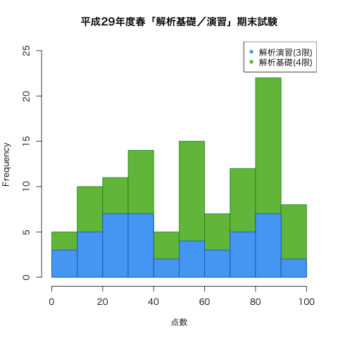

2017年度春学期 解析演習／解析基礎 Basic Analysis and Practice
火2限 10:55-12:35 | 2-275教室 | 対象：機械工学科1年生 発展コース
火3限 13:20-15:00 | 2-274教室 | 対象：機械工学科1年生 集中コース
担当：佐藤 弘康（hiroyasu [at] nit.ac.jp | W1棟204 | 0480-33-7972）
三角関数は振動・波動・回転のように繰り返す現象と特に相性がよい。そのため、自然科学のみならず工学のさまざまな分野で三角関数を用いた記述は頻出する。 数学をはじめとする専門科目をスムーズに理解するために、三角関数について学習する。基礎的な計算技法に習熟するとともに、三角関数のグラフや周期性についても理解する。
| 第1回 | 4月 | 11日（火） | ガイダンス ，三角比の定義 第6章 §1.1（〜p.160 問3） |
| 18日（火） | （休講） | ||
| 第2回 | 25日（火） | 具体的な鋭角の三角比 第6章 §1.1（p.160 例題2〜） ，三角比の相互関係 第6章 §1.2 課題：p.163 問2, 追加問題「$\tan A=5$ のとき，$\sin A$と$\cos A$を求めよ.」, p.164 問5 |
|
| 第3回 | 5月 | 2日（火） | 鈍角の三角比 第6章 §1.3 課題：p.167 問3,4 |
| 第4回 | 9日（火） | 三角形への応用 第6章 §1.4 課題：p.169 問3(1)(2), p.170 問5, p.172 問8,9 |
|
| 第5回 | 16日（火） | 一般角と弧度法，円弧の長さ，おうぎ形の面積 第6章 §2.1 課題：p.177 問5, 問6, p.178 問7 |
|
| 第6回 | 23日（火） | 三角関数の定義 第6章 §2.2 , 三角関数の性質 第6章 §2.2 課題：p.182 問8, 問9(2) |
|
| 第7回 | 30日（火） | 三角関数のグラフ（正弦，余弦） 第6章 §2.3 (〜p.188) 課題：p.187 問1, p.188 問2 |
|
| 第8回 | 6月 | 6日（火） | 小テスト（問題 | 解答 | 得点分布）【2限→11:30--12:30, 3限→13:30--14:30】 |
| 第9回 | 13日（火） | 三角関数のグラフ（正接） 第6章 §2.3 (p.188〜p.190) 課題：p.189 問3, p.190 問4 |
|
| 第10回 | 20日（火） | 加法定理 第6章 §3.1 , 2倍角の公式，半角の公式 第6章 §3.2 課題：p.195 問2, 3, p.196 問4, p.198 問2 |
|
| 27日（火） | （休講） | ||
| 第11回 | 7月 | 4日（月） | 加法定理の応用（三角関数の合成） 第6章 §3.3 (p.198, 199) 課題：p.199 問1(2), 2, 3 |
| 第12回 | 11日（火） | 加法定理の応用（積と和の公式） 第6章 §3.3 (p.200, 201) , 三角方程式 第6章 §3.4 (p.201, 202) 課題：p.202 問1 |
|
| 第13回 | 18日（水） | 三角不等式 第6章 §3.4 (p.202, 203) , 特別演習 【補講日：3限, 2-274】 | |
| 8月 | 1日（火） | 期末試験（問題 | 解答 | 得点分布） |
|  |
|